Paired Mass Distance(PMD) analysis for GC/LC-MS based non-targeted analysis
Miao Yu
2021-09-15
Source:vignettes/globalstd.Rmd
globalstd.RmdIntroduction of Paired Mass Distance analysis
pmd package use Paired Mass Distance (PMD) relationship to analysis the GC/LC-MS based non-targeted data. PMD means the distance between two masses or mass to charge ratios. In mass spectrometry, PMD would keep the same value between two masses and two mass to charge ratios(m/z). There are two kinds of PMD involved in this package: PMD from the same compound and PMD from different compounds. In GC/LC-MS or XCMS based non-targeted data analysis, peaks could be separated by chronograph and same compound means ions from similar retention times or ions co-eluted by certain column.
PMD from the same compound
For MS1 full scan data, we could build retention time(RT) bins to assign peaks into different RT groups by retention time hierarchical clustering analysis. For each RT group, the peaks should come from same compounds or co-elutes. If certain PMD appeared in multiple RT groups, it would be related to the relationship about adducts, neutral loss, isotopologues or common fragments ions.
PMD from different compounds
The peaks from different retention time groups would like to be different compounds separated by chronograph. The PMD would reflect the relationship about homologous series or chemical reactions.
GlobalStd algorithm use the PMD within same RT group to find independent peaks among certain data set. Then, structure/reaction directed analysis use PMD from different RT groups to screen important compounds or reactions.
Data format
The input data should be a list object with at least two elements from a peaks list:
- mass to charge ratio with name of
mz, high resolution mass spectrometry is required - retention time with name of
rt
However, I suggested to add intensity and group information to the list for validation of PMD analysis.
In this package, a data set from in vivo solid phase micro-extraction(SPME) was attached. This data set contain 9 samples from 3 fish with triplicates samples for each fish. Here is the data structure:
library(pmd)
data("spmeinvivo")
str(spmeinvivo)
#> List of 4
#> $ data : num [1:1459, 1:9] 1095 10439 10154 2797 90211 ...
#> ..- attr(*, "dimnames")=List of 2
#> .. ..$ : chr [1:1459] "100.1/170" "100.5/86" "101/85" "103.1/348" ...
#> .. ..$ : chr [1:9] "1405_Fish1_F1" "1405_Fish1_F2" "1405_Fish1_F3" "1405_Fish2_F1" ...
#> $ group:'data.frame': 9 obs. of 2 variables:
#> ..$ sample_name : chr [1:9] "1405_Fish1_F1" "1405_Fish1_F2" "1405_Fish1_F3" "1405_Fish2_F1" ...
#> ..$ sample_group: chr [1:9] "fish1" "fish1" "fish1" "fish2" ...
#> $ mz : num [1:1459] 100 101 101 103 104 ...
#> $ rt : num [1:1459] 170.2 86.3 84.9 348.1 48.8 ...You could build this list or mzrt object from the xcms objects via enviGCMS package. When you have a xcmsSet object or XCMSnExp object named xset, you could use enviGCMS::getmzrt(xset) to get such list. Of course you could build such list by yourself.
GlobalStd algorithm
GlobalStd algorithm try to find independent peaks among certain peaks list. The first step is retention time hierarchical clustering analysis. The second step is to find the relationship among adducts, neutral loss, isotopologues and common fragments ions. The third step is to screen the independent peaks.
Here is a workflow for this algorithm:
knitr::include_graphics('https://yufree.github.io/presentation/figure/GlobalStd.png')
STEP1: Retention time hierarchical clustering
pmd <- getpaired(spmeinvivo)
#> 75 retention time cluster found.
#> 369 paired masses found
#> 5 unique within RT clusters high frequency PMD(s) used for further investigation.
#> The unique within RT clusters high frequency PMD(s) is(are) 28.03 21.98 44.03 17.03 18.01.
#> 719 isotopologue(s) related paired mass found.
#> 492 multi-charger(s) related paired mass found.
plotrtg(pmd)
This plot would show the distribution of RT groups. The rtcutoff in function getpaired could be used to set the cutoff of the distances in retention time hierarchical clustering analysis. Retention time cluster cutoff should fit the peak picking algorithm. For HPLC, 10 is suggested and 5 could be used for UPLC.
Global PMD’s retention time group numbers should be around 20 percent of the retention time cluster numbers. For example, if you find 100 retention time clusters, I suggested you use 20 as the cutoff of empirical global PMD’s retention time group numbers. If you don’t specifically assign a value to ng, the algorithm will select such recommendation by default setting.
Take care of the retention time cluster with lots of peaks. In this case, such cluster could be co-eluted compounds on certain column. It would be wise to trim the retention time window for high quality peaks. Another important hint is that pre-filter your peak list by black samples or other quality control samples. Otherwise the running time would be long and lots of pmd relationship would be just from noise.
STEP2: Relationship among adducts, neutral loss, isotopologues and common fragments ions
The ng in function getpaired could be used to set cutoff of global PMD’s retention time group numbers. If ng is 10, at least 10 of the retention time groups should contain the shown PMD relationship. You could use plotpaired to show the distribution.
plotpaired(pmd)
You could also show the distribution of PMD relationship by index:
# show the unique PMD found by getpaired function
for(i in 1:length(unique(pmd$paired$diff2))){
diff <- unique(pmd$paired$diff2)[i]
index <- pmd$paired$diff2 == diff
plotpaired(pmd,index)
}


This is an easy way to find potential adducts of the data by high frequency PMD from the same compound. For example, 21.98 Da could be the mass distances between \([M+H]^+\) and \([M+Na]^+\). In this case, user could find the potential adducts or neutral loss even when they have no preferred adducts list. If one adduct exist in certain analytical system, the high frequency PMD will reveal such relationship. The high frequency PMD list could also be used to check the fragmental pattern of in-source reactions as long as such patterns are popular among all collected ions.
STEP3: Screen the independent peaks
You could use getstd function to get the independent peaks. Independent peaks mean the peaks list removing the redundant peaks such as adducts, neutral loss, isotopologues and comment fragments ions found by PMD analysis in STEP2. Ideally, those peaks could be molecular ions while they might still contain redundant peaks.
std <- getstd(pmd)
#> 8 retention group(s) have single peaks. 14 23 32 33 54 55 56 75
#> 11 group(s) with multiple peaks while no isotope/paired relationship 4 5 7 8 11 41 42 49 68 72 73
#> 9 group(s) with multiple peaks with isotope without paired relationship 2 9 22 26 52 62 64 66 70
#> 4 group(s) with paired relationship without isotope 1 10 15 18
#> 43 group(s) with paired relationship and isotope 3 6 12 13 16 17 19 20 21 24 25 27 28 29 30 31 34 35 36 37 38 39 40 43 44 45 46 47 48 50 51 53 57 58 59 60 61 63 65 67 69 71 74
#> 291 std mass found.Here you could plot the peaks by plotstd function to show the distribution of independent peaks:
plotstd(std)
You could also plot the peaks distribution by assign a retention time group via plotstdrt:
par(mfrow = c(2,3))
plotstdrt(std,rtcluster = 23,main = 'Retention time group 23')
plotstdrt(std,rtcluster = 9,main = 'Retention time group 9')
plotstdrt(std,rtcluster = 18,main = 'Retention time group 18')
plotstdrt(std,rtcluster = 67,main = 'Retention time group 67')
plotstdrt(std,rtcluster = 49,main = 'Retention time group 49')
plotstdrt(std,rtcluster = 6,main = 'Retention time group 6')
Extra filter with correlation coefficient cutoff
Original GlobalStd algorithm only use mass to charge ratio and retention time of peaks to select independent peaks. However, if intensity data across samples are available, correlation coefficient of paired ions could be used to further filter the random noise in high frequency PMDs. You could set up cutoff of Pearson Correlation Coefficient between peaks to refine the peaks selected by GlobalStd within same retention time groups. In this case, the numbers of selected independent peaks will be further reduced. When you use this parameter, make sure the intensity data are from real samples instead of blank samples, which will affect the calculation of correlation coefficient.
std2 <- getstd(pmd,corcutoff = 0.9)
#> 8 retention group(s) have single peaks. 14 23 32 33 54 55 56 75
#> 23 group(s) with multiple peaks while no isotope/paired relationship 2 4 5 7 8 10 11 15 18 26 35 39 41 42 49 50 59 62 68 69 70 72 73
#> 14 group(s) with multiple peaks with isotope without paired relationship 9 12 22 24 27 28 34 51 52 57 60 64 66 71
#> 3 group(s) with paired relationship without isotope 1 53 74
#> 27 group(s) with paired relationship and isotope 3 6 13 16 17 19 20 21 25 29 30 31 36 37 38 40 43 44 45 46 47 48 58 61 63 65 67
#> 120 std mass found.Validation by principal components analysis(PCA)
You need to check the GlobalStd algorithm’s results by principal components analysis(PCA). If we removed too much peaks containing information, the score plot of reduced data set would show great changes.
library(enviGCMS)
par(mfrow = c(2,2),mar = c(4,4,2,1)+0.1)
plotpca(std$data,lv = as.numeric(as.factor(std$group$sample_group)),main = "all peaks")
plotpca(std$data[std$stdmassindex,],lv = as.numeric(as.factor(std$group$sample_group)),main = paste(sum(std$stdmassindex),"independent peaks"))
plotpca(std2$data[std2$stdmassindex,],lv = as.numeric(as.factor(std$group$sample_group)),main = paste(sum(std2$stdmassindex),"reduced independent peaks"))
You might find original GlobalStd algorithm show a similar PCA score plot with original data while GlobalStd algorithm considering intensity data seems change the profile. The major reason is that correlation coefficient option in the algorithm will remove the paired ions without strong correlation. It will be aggressive to remove low intensity peaks, which are vulnerable by baseline noise. However, such options would be helpful if you only concern high quality peaks for following analysis. Otherwise, original GlobalStd will keep the most information for explorer purpose.
Comparison with other pseudo spectra extraction method
GlobalStd algorithm in pmd package could be treated as a method to extract pseudo spectra. You could use getcluster to get peaks groups information for all GlobalStd peaks. This function would consider the merge of GlobalStd peaks when certain peak is involved in multiple clusters. Then you could choose export peaks with the highest intensities or base peaks in each GlobalStd merged peaks groups. Meanwhile, you could also include the correlation coefficient cutoff to further improve the data quality.
stdcluster <- getcluster(std)
# extract pseudospectra for std peak 71
idx <- unique(stdcluster$cluster$largei[stdcluster$cluster$i==71])
plot(stdcluster$cluster$mz[stdcluster$cluster$largei==idx],stdcluster$cluster$ins[stdcluster$cluster$largei==idx],type = 'h',xlab = 'm/z',ylab = 'intensity',main = 'pseudo spectra for GlobalStd peak 71')
# export peaks with the highest intensities in each GlobalStd peaks groups.
data <- stdcluster$data[stdcluster$stdmassindex2,]
# considering the correlation coefficient cutoff
stdcluster2 <- getcluster(std, corcutoff = 0.9)
# considering the correlation coefficient cutoff for both psedospectra extraction and GlobalStd algorithm
stdcluster3 <- getcluster(std2, corcutoff = 0.9)We supplied getcorcluster to find peaks groups by correlation analysis only. The base peaks of correlation cluster were selected to stand for the compounds.
corcluster <- getcorcluster(spmeinvivo)
#> 75 retention time cluster found.
# extract pseudospectra 1@46
peak <- corcluster$cluster[corcluster$cluster$largei == '1@46',]
plot(peak$ins~peak$mz,type = 'h',xlab = 'm/z',ylab = 'intensity',main = 'pseudo spectra for correlation cluster')Then we could compare the compare reduced result using PCA similarity factor. A good peak selection algorithm could show a high PCA similarity factor compared with original data set while retain the minimized number of peaks.
par(mfrow = c(3,3),mar = c(4,4,2,1)+0.1)
plotpca(std$data[std$stdmassindex,],lv = as.numeric(as.factor(std$group$sample_group)),main = paste(sum(std$stdmassindex),"independent peaks"))
plotpca(std$data[stdcluster$stdmassindex2,],lv = as.numeric(as.factor(std$group$sample_group)),main = paste(sum(stdcluster$stdmassindex2),"independent base peaks"))
plotpca(std$data[stdcluster2$stdmassindex2,],lv = as.numeric(as.factor(std$group$sample_group)),main = paste(sum(stdcluster2$stdmassindex2),"independent reduced base peaks"))
plotpca(std$data[corcluster$stdmassindex,],lv = as.numeric(as.factor(std$group$sample_group)),main = paste(sum(corcluster$stdmassindex),"peaks without correlationship"))
plotpca(std$data[corcluster$stdmassindex2,],lv = as.numeric(as.factor(std$group$sample_group)),main = paste(sum(corcluster$stdmassindex2),"base peaks without correlationship"))
plotpca(std$data,lv = as.numeric(as.factor(std$group$sample_group)),main = paste(nrow(std$data),"all peaks"))
plotpca(std$data[stdcluster3$stdmassindex2,],lv = as.numeric(as.factor(std$group$sample_group)),main = paste(sum(stdcluster3$stdmassindex2),"reduced independent base peaks"))
pcasf(std$data, std$data[std$stdmassindex,])
#> pcasf
#> 0.9993497
pcasf(std$data, std$data[stdcluster$stdmassindex2,])
#> pcasf
#> 0.9993578
pcasf(std$data, std$data[stdcluster2$stdmassindex2,])
#> pcasf
#> 0.999346
pcasf(std$data, std$data[corcluster$stdmassindex,])
#> pcasf
#> 0.9471586
pcasf(std$data, std$data[corcluster$stdmassindex2,])
#> pcasf
#> 0.9497193
pcasf(std$data, std$data[stdcluster3$stdmassindex2,])
#> pcasf
#> 0.713527
In this case, five peaks selection algorithms are fine to stand for the original peaks with PCA similarity score larger than 0.9. However, the independent base peaks retain the most information with relative low numbers of peaks.
Structure/Reaction directed analysis
getsda function could be used to perform Structure/reaction directed analysis. The cutoff of frequency is automate found by PMD network analysis with the largest mean distance of all nodes.
sda <- getsda(std)
#> PMD frequency cutoff is 6 by PMD network analysis with largest network average distance 6.67 .
#> 53 groups were found as high frequency PMD group.
#> 0 was found as high frequency PMD.
#> 1.98 was found as high frequency PMD.
#> 2.01 was found as high frequency PMD.
#> 2.02 was found as high frequency PMD.
#> 6.97 was found as high frequency PMD.
#> 11.96 was found as high frequency PMD.
#> 12 was found as high frequency PMD.
#> 13.98 was found as high frequency PMD.
#> 14.02 was found as high frequency PMD.
#> 14.05 was found as high frequency PMD.
#> 15.99 was found as high frequency PMD.
#> 16.03 was found as high frequency PMD.
#> 19.04 was found as high frequency PMD.
#> 28.03 was found as high frequency PMD.
#> 30.05 was found as high frequency PMD.
#> 31.99 was found as high frequency PMD.
#> 33.02 was found as high frequency PMD.
#> 37.02 was found as high frequency PMD.
#> 42.05 was found as high frequency PMD.
#> 48.04 was found as high frequency PMD.
#> 48.98 was found as high frequency PMD.
#> 49.02 was found as high frequency PMD.
#> 54.05 was found as high frequency PMD.
#> 56.06 was found as high frequency PMD.
#> 56.1 was found as high frequency PMD.
#> 58.04 was found as high frequency PMD.
#> 58.08 was found as high frequency PMD.
#> 58.11 was found as high frequency PMD.
#> 63.96 was found as high frequency PMD.
#> 66.05 was found as high frequency PMD.
#> 68.06 was found as high frequency PMD.
#> 70.04 was found as high frequency PMD.
#> 70.08 was found as high frequency PMD.
#> 74.02 was found as high frequency PMD.
#> 80.03 was found as high frequency PMD.
#> 82.08 was found as high frequency PMD.
#> 88.05 was found as high frequency PMD.
#> 91.1 was found as high frequency PMD.
#> 93.12 was found as high frequency PMD.
#> 94.1 was found as high frequency PMD.
#> 96.09 was found as high frequency PMD.
#> 101.05 was found as high frequency PMD.
#> 108.13 was found as high frequency PMD.
#> 110.11 was found as high frequency PMD.
#> 112.16 was found as high frequency PMD.
#> 116.08 was found as high frequency PMD.
#> 122.15 was found as high frequency PMD.
#> 124.16 was found as high frequency PMD.
#> 126.14 was found as high frequency PMD.
#> 144.18 was found as high frequency PMD.
#> 148.04 was found as high frequency PMD.
#> 150.2 was found as high frequency PMD.
#> 173.18 was found as high frequency PMD.Such largest mean distance of all nodes is calculated for top 1 to 100 (if possible) high frequency PMDs. Here is a demo for the network generation process.
library(igraph)
#>
#> Attaching package: 'igraph'
#> The following objects are masked from 'package:stats':
#>
#> decompose, spectrum
#> The following object is masked from 'package:base':
#>
#> union
cdf <- sda$sda
# get the PMDs and frequency
pmds <- as.numeric(names(sort(table(cdf$diff2),decreasing = T)))
freq <- sort(table(cdf$diff2),decreasing = T)
# filter the frequency larger than 10 for demo
pmds <- pmds[freq>10]
cdf <- sda$sda[sda$sda$diff2 %in% pmds,]
g <- igraph::graph_from_data_frame(cdf,directed = F)
l <- igraph::layout_with_fr(g)
for(i in 1:length(pmds)){
g2 <- igraph::delete_edges(g,which(E(g)$diff2%in%pmds[1:i]))
plot(g2,edge.width=1,vertex.label="",vertex.size=1,layout=l,main=paste('Top',length(pmds)-i,'high frequency PMDs'))
} 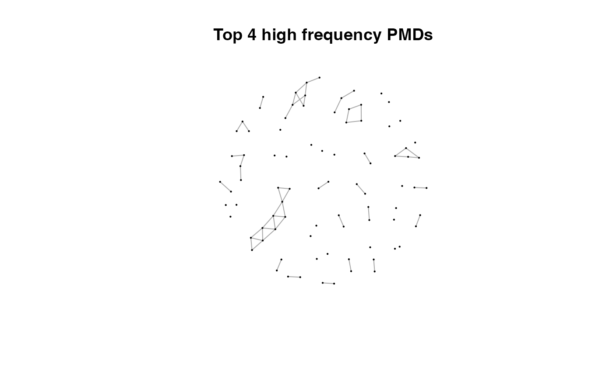
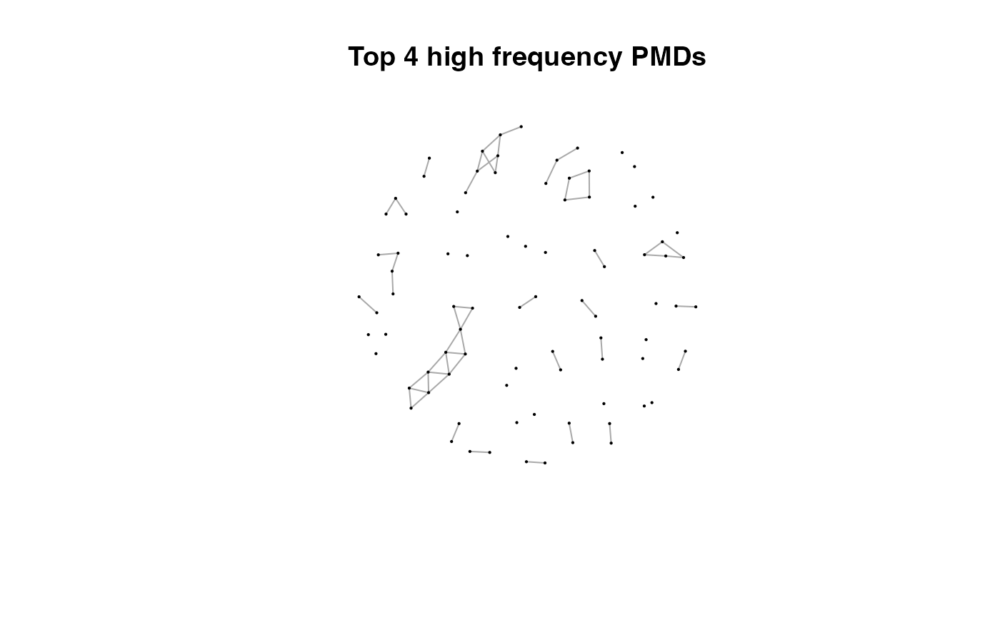 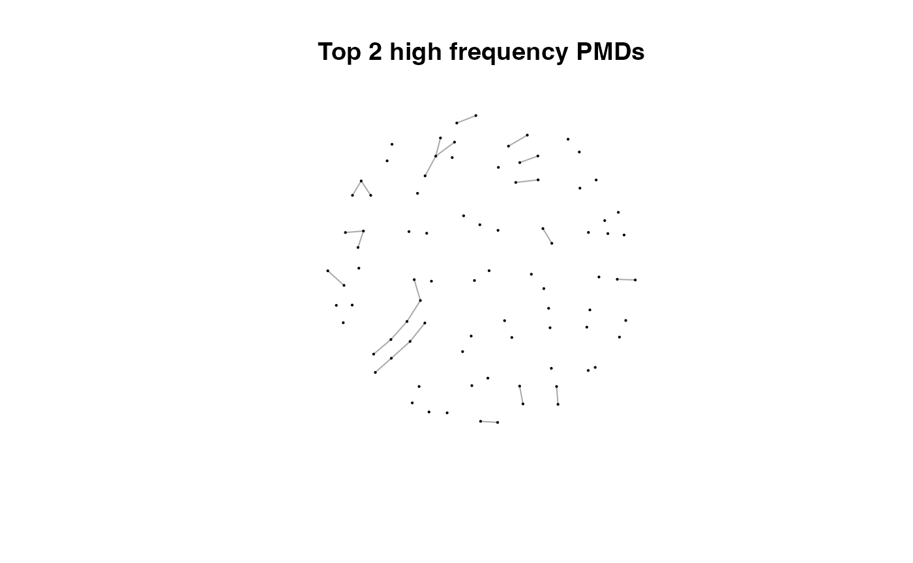
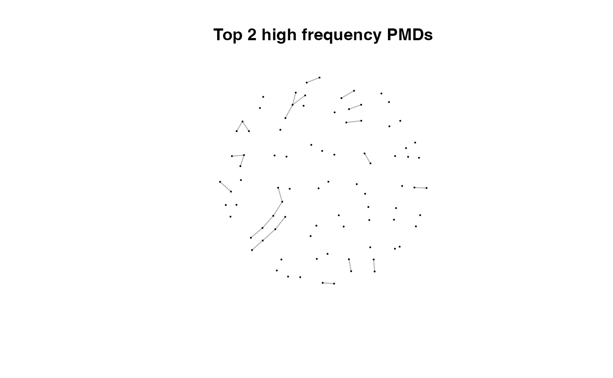
 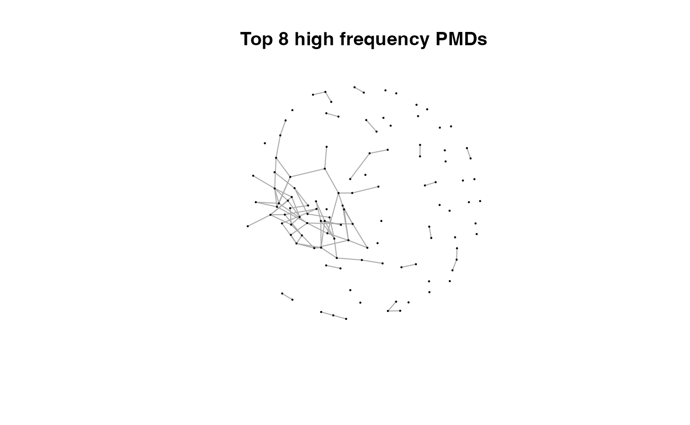
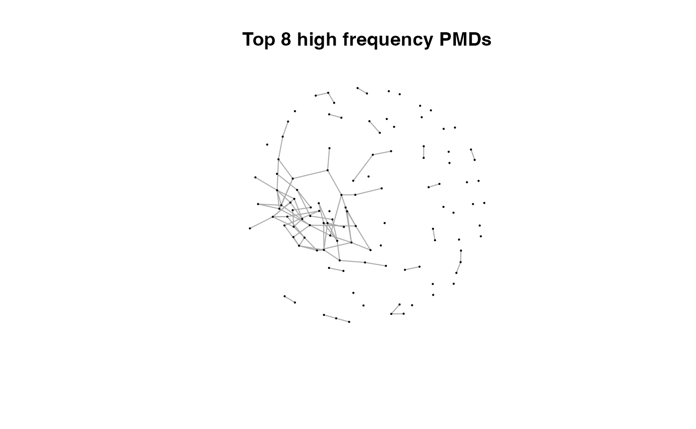 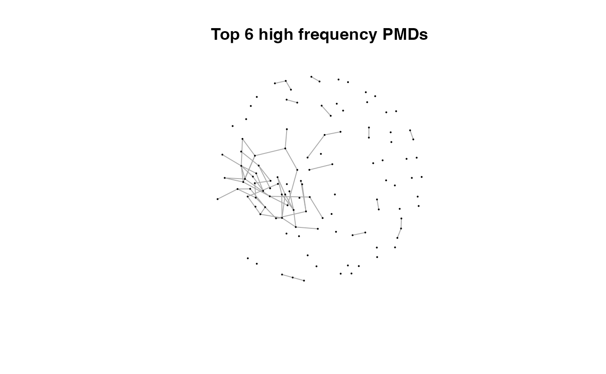
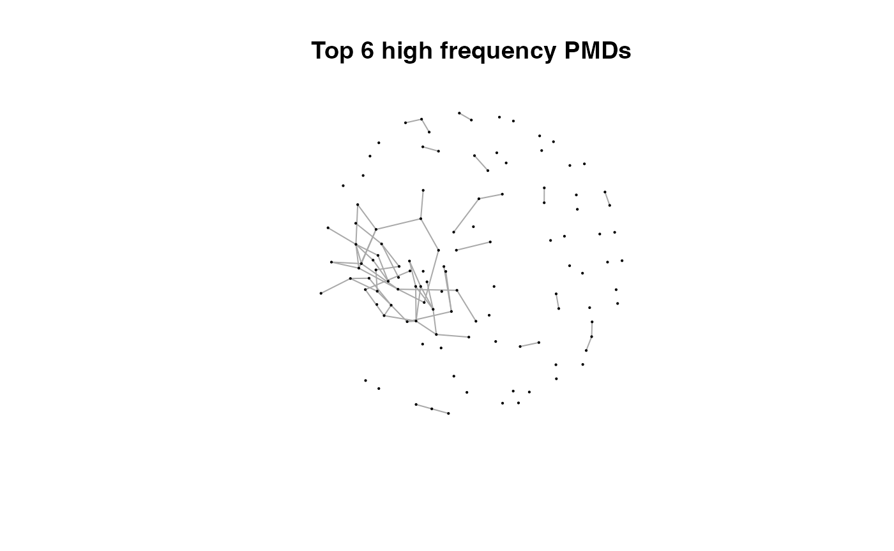
 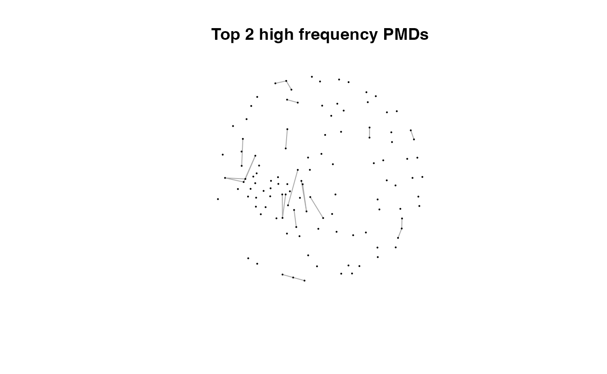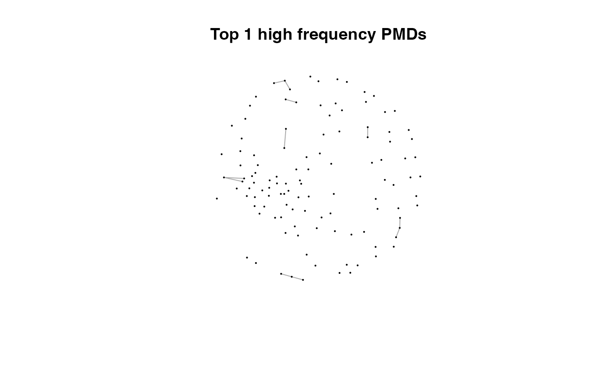
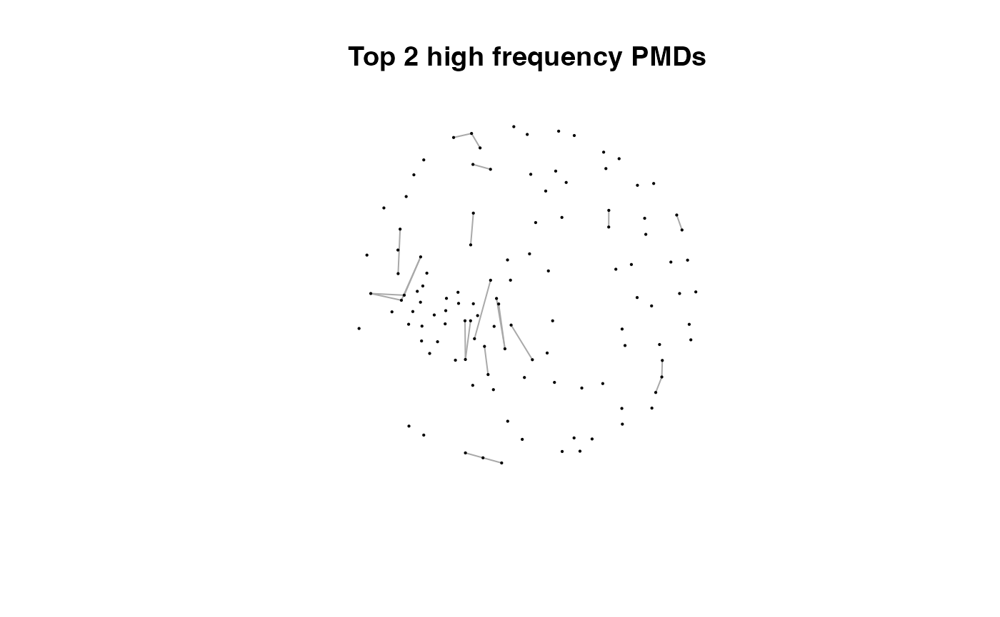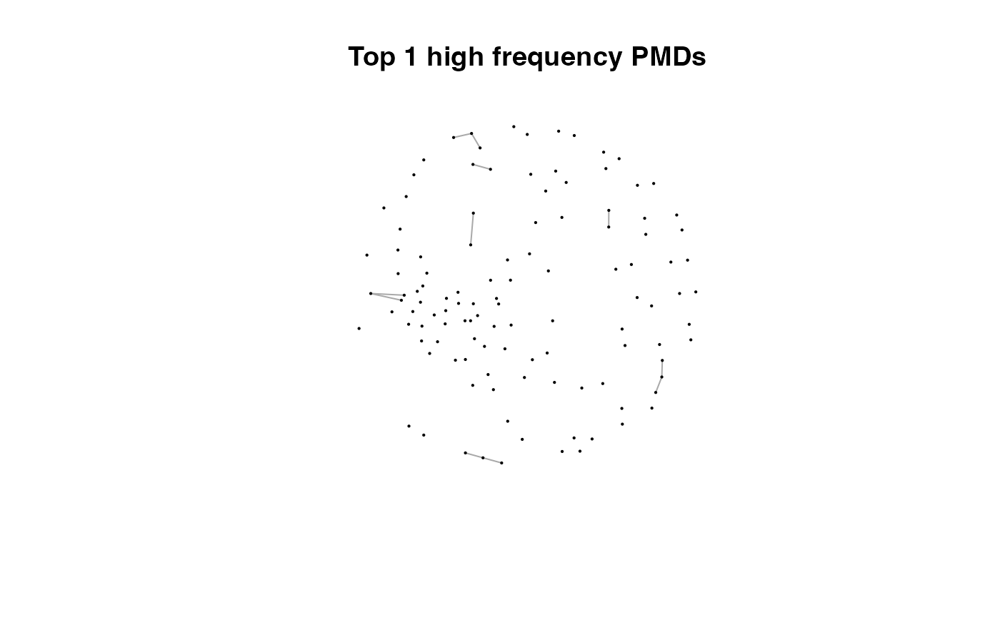
Here we could find more and more compounds will be connected with more high frequency PMDs. Meanwhile, the mean distance of all network nodes will increase. However, some PMDs are generated by random combination of ions. In this case, if we included those PMDs for the network, the mean distance of all network nodes will decrease. Here, the largest mean distance means no more information will be found for certain data set and such value is used as the cutoff for high frequency PMDs selection.
You could use plotstdsda to show the distribution of the selected paired peaks.
plotstdsda(sda)
You could also use index to show the distribution of certain PMDs.
par(mfrow = c(1,3),mar = c(4,4,2,1)+0.1)
plotstdsda(sda,sda$sda$diff2 == 2.02)
plotstdsda(sda,sda$sda$diff2 == 28.03)
plotstdsda(sda,sda$sda$diff2 == 58.04)
Structure/reaction directed analysis could be directly performed on all the peaks, which is slow to process:
sdaall <- getsda(spmeinvivo)
#> PMD frequency cutoff is 104 by PMD network analysis with largest network average distance 14.06 .
#> 6 groups were found as high frequency PMD group.
#> 0 was found as high frequency PMD.
#> 2.02 was found as high frequency PMD.
#> 28.03 was found as high frequency PMD.
#> 31.01 was found as high frequency PMD.
#> 58.04 was found as high frequency PMD.
#> 116.08 was found as high frequency PMD.
par(mfrow = c(1,3),mar = c(4,4,2,1)+0.1)
plotstdsda(sdaall,sdaall$sda$diff2 == 2.02)
plotstdsda(sdaall,sdaall$sda$diff2 == 28.03)
plotstdsda(sdaall,sdaall$sda$diff2 == 58.04)
Extra filter with correlation coefficient cutoff
Structure/Reaction directed analysis could also use correlation to restrict the paired ions. However, similar to GlobalStd algorithm, such cutoff will remove low intensity data. Researcher should have a clear idea to use this cutoff.
sda2 <- getsda(std, corcutoff = 0.9)
#> PMD frequency cutoff is 6 by PMD network analysis with largest network average distance 6.67 .
#> 41 groups were found as high frequency PMD group.
#> 0 was found as high frequency PMD.
#> 1.98 was found as high frequency PMD.
#> 2.01 was found as high frequency PMD.
#> 2.02 was found as high frequency PMD.
#> 11.96 was found as high frequency PMD.
#> 12 was found as high frequency PMD.
#> 13.98 was found as high frequency PMD.
#> 14.02 was found as high frequency PMD.
#> 14.05 was found as high frequency PMD.
#> 15.99 was found as high frequency PMD.
#> 16.03 was found as high frequency PMD.
#> 19.04 was found as high frequency PMD.
#> 28.03 was found as high frequency PMD.
#> 30.05 was found as high frequency PMD.
#> 31.99 was found as high frequency PMD.
#> 33.02 was found as high frequency PMD.
#> 42.05 was found as high frequency PMD.
#> 48.98 was found as high frequency PMD.
#> 49.02 was found as high frequency PMD.
#> 54.05 was found as high frequency PMD.
#> 56.06 was found as high frequency PMD.
#> 58.04 was found as high frequency PMD.
#> 58.08 was found as high frequency PMD.
#> 63.96 was found as high frequency PMD.
#> 66.05 was found as high frequency PMD.
#> 68.06 was found as high frequency PMD.
#> 70.08 was found as high frequency PMD.
#> 74.02 was found as high frequency PMD.
#> 80.03 was found as high frequency PMD.
#> 82.08 was found as high frequency PMD.
#> 88.05 was found as high frequency PMD.
#> 93.12 was found as high frequency PMD.
#> 94.1 was found as high frequency PMD.
#> 96.09 was found as high frequency PMD.
#> 108.13 was found as high frequency PMD.
#> 110.11 was found as high frequency PMD.
#> 112.16 was found as high frequency PMD.
#> 116.08 was found as high frequency PMD.
#> 122.15 was found as high frequency PMD.
#> 124.16 was found as high frequency PMD.
#> 126.14 was found as high frequency PMD.
plotstdsda(sda2)
Structure/reaction directed analysis for peaks/compounds only data
When you only have data of peaks without retention time or compounds list, structure/reaction directed analysis could also be done by getrda function.
sda <- getrda(spmeinvivo$mz[std$stdmassindex])
#> 36668 pmd found.
#> 3 pmd used.Wrap function for GlobalStd algorithm
globalstd function is a wrap function to process GlobalStd algorithm and structure/reaction directed analysis in one line. All the plot function could be directly used on the list objects from globalstd function. If you want to perform structure/reaction directed analysis, set the sda=T in the globalstd function.
result <- globalstd(spmeinvivo, sda=FALSE)
#> 75 retention time cluster found.
#> 369 paired masses found
#> 5 unique within RT clusters high frequency PMD(s) used for further investigation.
#> The unique within RT clusters high frequency PMD(s) is(are) 28.03 21.98 44.03 17.03 18.01.
#> 719 isotopologue(s) related paired mass found.
#> 492 multi-charger(s) related paired mass found.
#> 8 retention group(s) have single peaks. 14 23 32 33 54 55 56 75
#> 11 group(s) with multiple peaks while no isotope/paired relationship 4 5 7 8 11 41 42 49 68 72 73
#> 9 group(s) with multiple peaks with isotope without paired relationship 2 9 22 26 52 62 64 66 70
#> 4 group(s) with paired relationship without isotope 1 10 15 18
#> 43 group(s) with paired relationship and isotope 3 6 12 13 16 17 19 20 21 24 25 27 28 29 30 31 34 35 36 37 38 39 40 43 44 45 46 47 48 50 51 53 57 58 59 60 61 63 65 67 69 71 74
#> 291 std mass found.Use independent peaks for MS/MS validation (PMDDA)
Independent peaks are supposing generated from different compounds. We could use those peaks for MS/MS analysis instead of DIA or DDA. Here we need multiple injections for one sample since it might be impossible to get all ions’ fragment ions in one injection with good sensitivity. You could use gettarget to generate the index for the injections and output the peaks for each run.
# you need retention time for independent peaks
index <- gettarget(std$rt[std$stdmassindex])
#> You need 10 injections!
# output the ions for each injection
table(index)
#> index
#> 1 2 3 4 5 6 7 8 9 10
#> 22 26 19 30 55 29 20 30 35 25
# show the ions for the first injection
std$mz[index==1]
#> [1] 103.0547 114.0918 136.0401 137.9884 137.9885 140.0600 140.0688 147.1175
#> [9] 149.0236 166.0867 167.0134 173.1335 184.9858 185.1148 191.1801 192.0132
#> [17] 206.0898 213.2050 228.1973 239.1490 250.1781 255.2077 262.1453 267.0639
#> [25] 270.3185 270.3185 270.3185 271.3217 271.3216 272.9318 273.1854 285.9630
#> [33] 286.3101 294.9392 307.1107 307.3001 309.0913 309.1672 320.3040 327.2022
#> [41] 337.3298 341.3512 356.3423 362.9280 368.3395 374.3041 383.3723 385.3480
#> [49] 386.2783 389.2529 390.2490 394.2617 394.4045 410.8485 412.8751 418.3398
#> [57] 430.8888 430.9137 432.3878 432.8860 447.3469 456.8437 485.2901 498.9017
#> [65] 517.8314 527.1586 538.3435 542.3991 558.4221 560.2193 560.2188 562.1811
#> [73] 563.1820 566.1776 566.8886 587.8828 592.3902 601.3844 621.4195 621.4412
#> [81] 628.8597 629.8618 651.8520 664.4627 680.4633 695.5039 709.3670 719.9400
#> [89] 737.3591 750.6089 766.3701 771.3530 771.6456 773.3274 773.5622 777.3853
#> [97] 779.3404 804.5530 806.8262 825.3520 841.8196 843.8158 853.7083 854.8122
#> [105] 873.4237 884.4968 911.7489 929.8218 956.7945 978.4752 998.7737
std$rt[index==1]
#> [1] 348.1340 172.8550 552.8035 817.6920 727.2225 511.0515 212.7160 611.4110
#> [9] 583.7690 511.2940 76.2780 611.4120 85.4930 364.4610 638.8870 217.1820
#> [17] 583.3410 594.9115 453.1570 170.2755 612.8060 439.2490 491.1510 568.7680
#> [25] 564.9110 681.3155 802.2200 744.1460 895.8020 145.7540 581.1950 147.4990
#> [33] 732.0395 213.7720 212.7520 582.8050 568.7680 237.5130 622.7700 170.3860
#> [41] 595.1260 639.3140 594.4830 213.9270 644.2430 582.4840 616.1270 585.4825
#> [49] 493.3975 383.1060 534.0100 639.1000 682.3135 218.3130 144.2540 582.2680
#> [57] 549.6980 213.7270 612.4845 549.9110 711.4240 217.2465 582.6970 213.7270
#> [65] 144.7890 142.3240 537.2240 439.6780 439.4630 340.9965 170.0260 762.3630
#> [73] 762.3630 762.5770 213.7720 213.5090 169.9680 213.5920 454.9350 531.0090
#> [81] 213.5990 214.6170 215.7110 527.7950 468.4360 698.3510 481.2940 212.6510
#> [89] 213.5480 624.2710 462.0070 213.7130 613.5550 370.5620 492.4390 474.2205
#> [97] 214.9615 631.5555 213.6270 376.2490 213.8945 213.9640 646.6610 215.4170
#> [105] 471.3075 213.3590 650.4570 213.3340 215.0405 480.2610 215.6570Shiny application
An interactive document has been included in this package to perform PMD analysis. You need to prepare a csv file with m/z and retention time of peaks. Such csv file could be generated by run enviGCMS::getcsv() on the list object from enviGCMS::getmzrt(xset) function. The xset should be XCMSnExp object or xcmsSet object. You could also generate the csv file by enviGCMS::getmzrt(xset,name = 'test'). You will find the csv file in the working dictionary named test.csv.
Then you could run runPMD() to start the Graphical user interface(GUI) for GlobalStd algorithm and structure/reaction directed analysis.